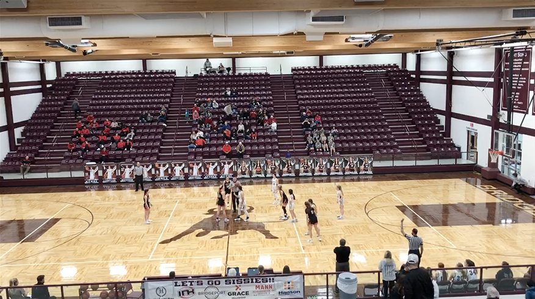
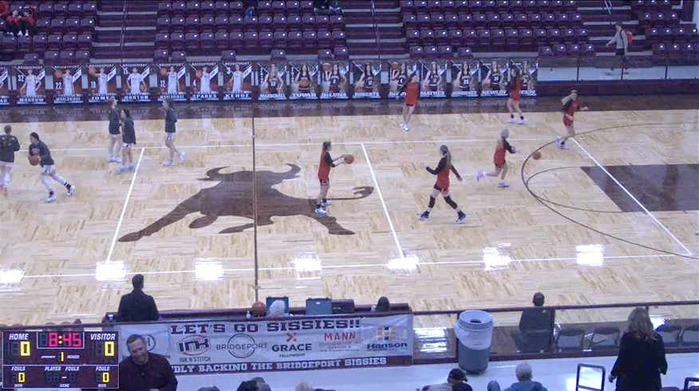
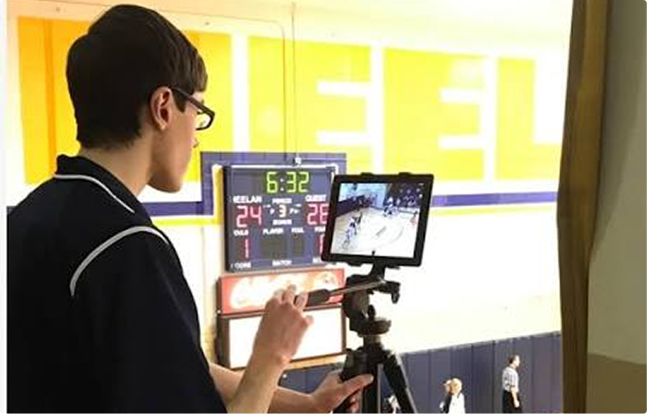
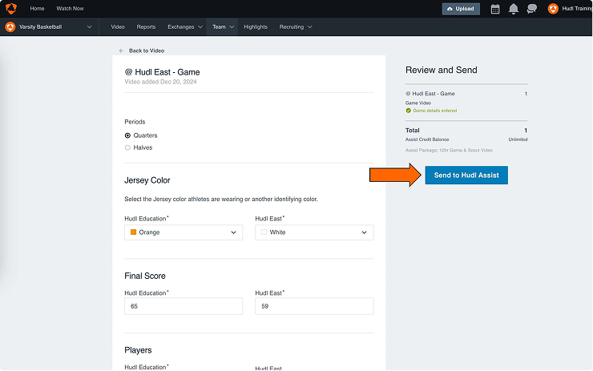
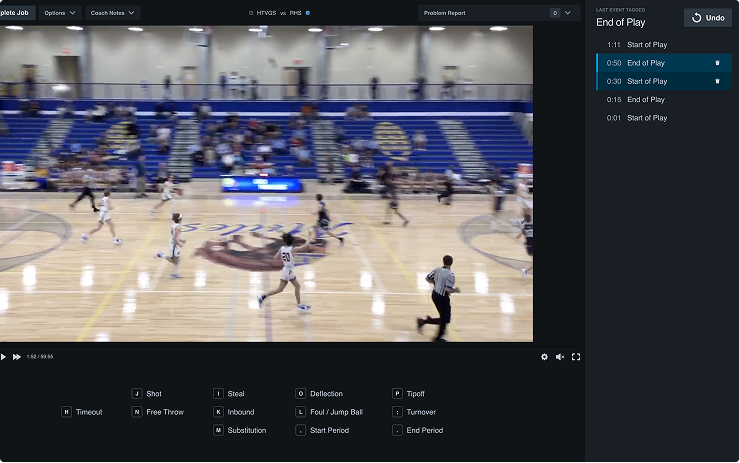
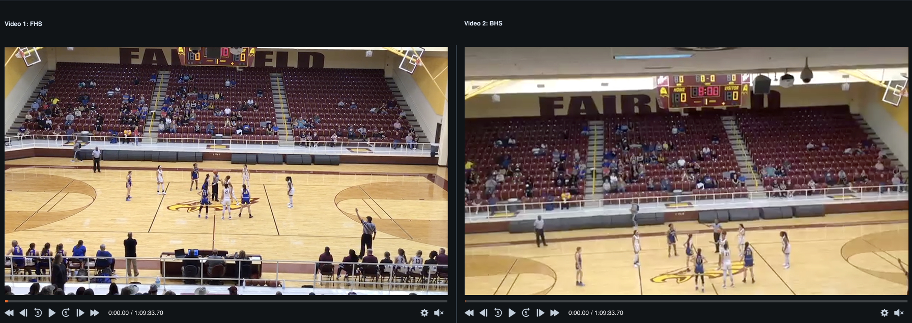
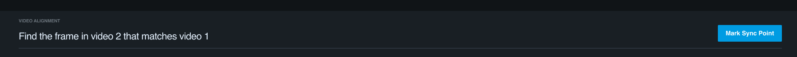

Video Alignment Tool
Tag a game only once — $500K saved, year over year
Hudl Assist
When both teams film the same game, Hudl pays analysts to break down both recordings — two passes, two hours each, for one set of data that should come out identical.

- Impact
- $500K saved a year in duplicate tagging
- Tag time
- 2+ hrs → 7.8 min tag time
- My role
- Sole designer — research, prototype, shipped UI
- Team & timeline
- 1 quarter · 1 PM, 4 devs, 2 QA
How can Hudl save money by tagging a game only ONCE, when two recordings of the same game come in?
Paying twice for the same game
Hudl Assist breaks game film down into a list of events and the video timestamp of each one. When two teams submit their own recording of the same game, we have no way to move one breakdown onto the other — so analysts tag both. Roughly two analyst hours a video, doubled, for data that should come out identical.
That duplicate work on the second game was costing about $800K a year. Wipe it out entirely — zero analyst time on the second video — and that’s the ceiling on what we could save.
Coach A’s film

Tagging takes 2+ analyst hours
Coach B’s film

Tagging takes 2+ analyst hours
It’s the same game. It’s the same data.
One game means one set of events, at the same moments. The second pass costs another two hours and buys nothing.
When could we solve this?

Stop a user from recording the video in the first place.

Suggest faster data before the video got into the tagging queue.

Before an analyst starts tagging the second game.
What if only one recording of the game ever existed?
What it hinges on
- Would a coach skip filming their own game?
- Do they trust the other team to film it?
Risk
- Coaches might hate this
Could we give them their data before a credit is spent?
What it hinges on
- Is the opponent’s film good enough to use?
- Is their data there in time to matter?
Risk
- Low scale adoption would not hit our saving targets
Can one video’s tags be mapped onto the other?
What it hinges on
- Can two recordings of one game be aligned?
- Do we see a drop in data quality because of it?
Risk
- Is this even possible to solve?
Research
Research stopped the cheap fix no coach would like
The cheapest solution needed almost no engineering: ask a coach whether they’d take their opponent’s video to get their own data back faster. I interviewed 8 high school basketball coaches and surveyed 638 coaches across sports. The answer was a resounding no. They didn’t trust the other team to send film over quickly, they wanted their own camera angle, and they worried about the quality of whatever the opponent shot.
What if only one recording of the game ever existed?
Could we give them their data before a credit is spent?
Can one video's tags be mapped onto the other?
Option 1 was an absolute no. Users wanted their own video.
Option 2 stayed open for the small group of coaches who only needed reporting data and didn’t care about the video.
Option 3, though seemingly impossible, felt like our best option to save the most money while maintaining a good user experience.
How did we solve for the impossible? Four bets in two weeks — one winner
This sprint was easily the weirdest in my career so far and I'm not sure if I'll ever experience something like it again. My team split into 2 teams and raced four bets in parallel, hack-a-thon style. 3 of my engineers and 1 QA drove ahead trying to solve the mapping from one video's tags to the next from a technical perspective. Me, 1 dev, and 1 QA took to handling option 2, the back of plan if we couldn't actually figure out the mapping.
Bet 1
Use the machine learning to anchor events
Tag a subset of events on Video B with ML, then transfer the rest across from Video A.
Bet 2
Suggest to the coach they could get data faster
Tell the opposing coach the game is already broken down, and see whether that prevents the duplicate at all.
Bet 3
Hand-tag anchor events
Bet 1 without the ML — tag a subset on Video B by hand, transfer the rest.
Bet 4 The winner
Align the video, not the data
Use the metadata already in the file to line the two recordings up, and every event moves at once. Not what Bet 4 started as — it was rewritten mid-sprint.
The reframe: Bet 4 was originally a second concept around stopping a user from submitting their own video. Hat tip to Adobe Premiere for helping me solve the case.
I was on Bet 2, digging through admin, when I noticed a weird pattern in the video meta data. A coach who stops recording between plays isn’t submitting one video — they’re submitting a stack of pieces, and the pieces are what knock the data timelines apart (the reason why it felt impossible to solve this). I cut one in Premiere and aligned the media segments by hand to test it. It aligned. I tested another 5 sets of videos to prove it. They all worked.
The jobs that wouldn’t line up all had multiple media segments. The problem was never getting data onto the second video. It was aligning the two videos.
Making this pitch to my team to change the strategy was challenging. My team believed me, but media segments, the edge cases, they were really complicated to explain and visualize. It was hard to grasp when we thought it was a data problem.
I tried again and started the argument with a meme. One of my devs saw the math behind it, and we spent the rest of the sprint proving it out. Two separate math alignment equations made data mapping work far more often than starting with the data.


I built the prototype myself, then tested it with 25 analysts
The math worked on two videos inside the team. Whether a Hudl Assist analyst could find the right timestamp to align the two videos, on angles pulled from a much larger sample, was a different question.
My devs were tied up with critical bugs and backend work. Rather than wait for them, or assume analysts could complete the workflow just because my team could, I built a prototype myself (thanks Claude!): two sets of playable video, and some video editing magic to make it feel like a live job. Twenty-five analysts tested it across moderated and unmoderated sessions, all testing out several different angles of video.


Two things came back.
1. It worked.
Fast, accurate, and it absolutely solved the tag-a-game-only-once problem.
2. It worked if the tip-off was on film.
When the tip-off was missing from one of the videos, tag times crossed fifteen minutes and kept climbing.
We leaned on the tip-off because it’s easy to find and impossible to mistake for anything else. Without an anchor like it, an analyst is just scrubbing. So I fixed both problems in the design before a line of production code was written:
- Improved video navigation and keyboard shortcuts, so hunting for a new anchor is a few keystrokes instead of a search.
- A way to set the sync point anywhere in either video, rather than assuming it lives at the start of the game.
Design elements
Three decisions carry the whole interface. Each shows up once in the shipped tool below, but each one earned its place on its own.

Two videos, stepped independently
Frame-accurate transport on each submission, not a shared scrubber — because a near-match on video this granular is not a match. An analyst has to be able to nudge either side by a single frame without disturbing the other.

One decision, one button
Confirming the sync point is the only thing the tool asks an analyst to judge. Everything else — the math, the event mapping — happens the moment they click it.
Anchored anywhere, not just the tip-off
The fix that came out of analyst testing, when missing footage at the start of a game turned a two-minute job into a fifteen-minute one. Any shared moment in either video can anchor the sync, not just the opening tip-off.
Final designs
A tagging interface with as little analyst interaction as possible: load both submissions, confirm one sync point, and every event crosses over in a single pass.
- Both submissions, stepped independently. Frame-accurate transport on each, because a near-match is not a match.
- One decision, one button. Confirming the sync point is the only thing the tool asks an analyst to judge.
- Anchored anywhere, not just the tip-off. The fix that came out of testing, when missing footage turned a two-minute job into a fifteen-minute one.
$500K a year, and no drop in quality
Not the full $800K ceiling — every job still costs an analyst about 7.8 minutes to confirm the sync point, instead of zero. That residual work, multiplied across a season of duplicate games, is the gap between what eliminating the second pass could have saved and what we actually saved.
$500K
saved year over year on duplicate tagging
7.8 min
median tag time in testing, down from over 2 hours
No dip
guardrail: coach ratings held on real games after launch
What I’d do next
- A keyboard shortcut for setting a sync point. It’s still a mouse job, and it’s the one step an analyst does on every single alignment.
- Solve for multi. We handle one messy video well. Two messy videos — both chopped into segments, neither with a clean anchor — still fall back to manual work.
What I Learned
Even with people's best efforts to describe a problem in a way that's abstract of the solution, there can be misses at the beginning of the processes when people are forming their own first thoughts on how to solve something. The initial framing is very important, but isn't always right and can get people stuck. When this happens, presenting something else in a new, goofy, or curveball type format can help break that funk.
The working — the workshop, the math, and why the tip-off 2 min read
Where in the pipeline we could solve it
Before any of the bets, my PM and I ran a workshop to walk the squad through where a fix could live, which edge cases were real, and what our options actually were. It is the reason we went into the two weeks with four bets rather than four arguments.

The math the meme was standing in for
If we used the metadata timestamps on each media segment relative to each other, we could align the video in chunks. Where Video B has media segments we know exactly where its pauses are; where it doesn’t, we binary-search for them.
Why the tip-off, specifically
A sync point is technically arbitrary — any shared instant works. But anchoring on a real event gives you context clues, and context clues are what let someone land an almost frame-accurate match. The tip-off is easy to find and impossible to mistake for anything else, which is why it became the default rather than the requirement.